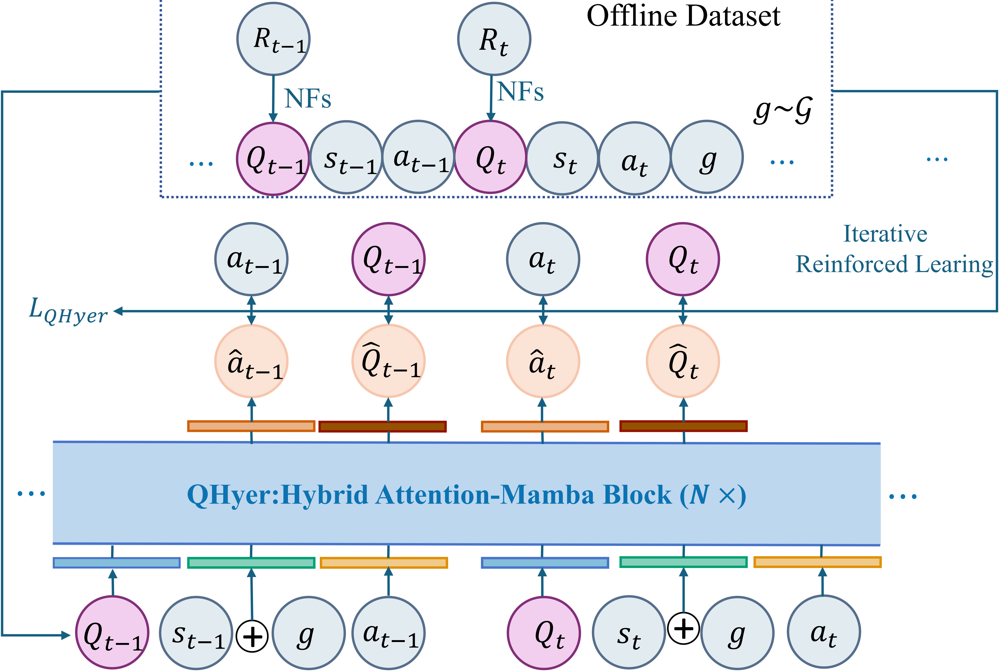
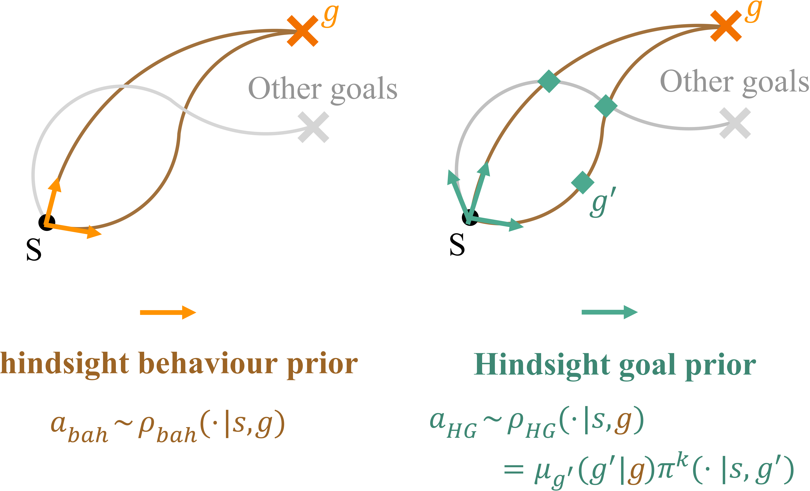
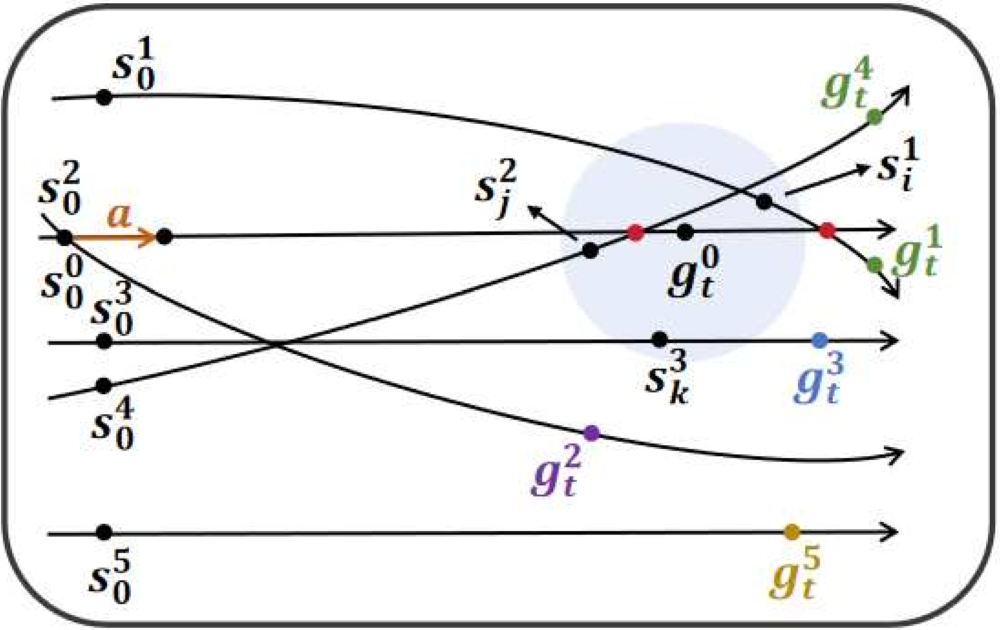
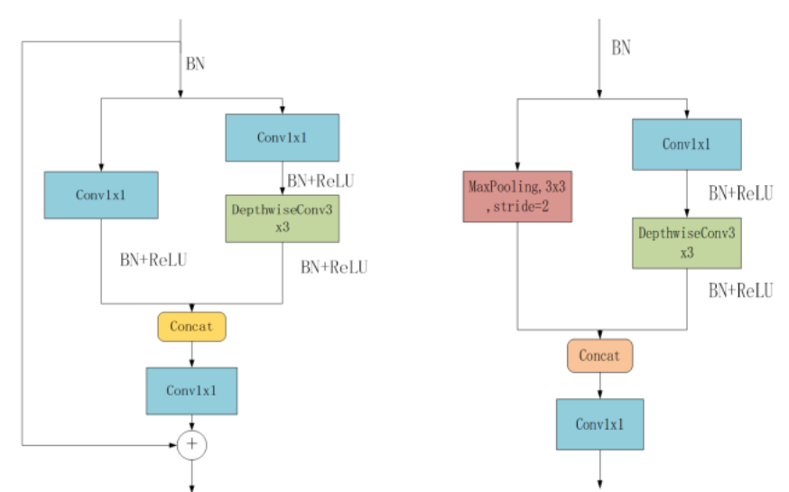

Hi, I am Xing Lei (雷星), a Ph.D. student at the School of Artificial Intelligence, Xi'an Jiaotong University, majoring in Artificial Intelligence (2020–present). Before that, I obtained my Master's degree in Software Engineering from Xi'an Jiaotong University (2019), and my Bachelor's degree in Computer Science from Chang'an University (2016).
The central goal of my research is to build decision-making agents that are capable of learning efficiently from offline data and generalizing to a wide variety of unseen goals and environments. I strive to achieve this by developing sample-efficient and generalizable deep reinforcement learning (RL) algorithms. My research helps acquire general and robust decision-making behaviors in both simulated and real-world tasks. Especially, I study three main topics:
* Equal contribution. Full list available on Google Scholar.



